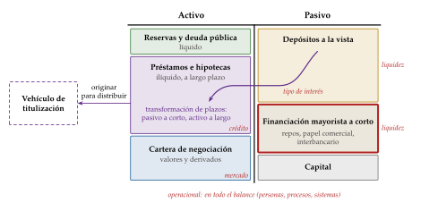
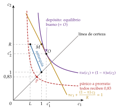
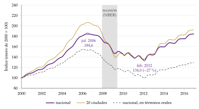
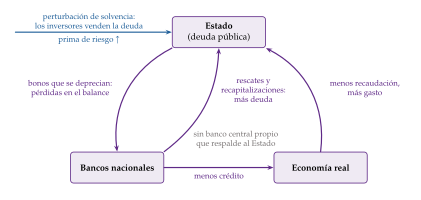
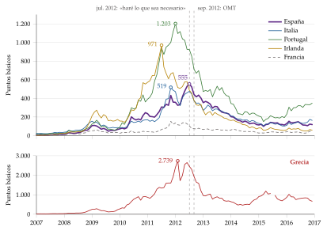
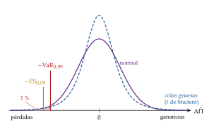

Tema 3.B.26
Crisis financieras y pánicos bancarios; especial referencia a la crisis financiera internacional iniciada en 2007-2008. Gestión de riesgos de las instituciones financieras.
Diamond-Dybvig, Kindleberger, Minsky, Fisher, burbujas, crisis de 2007-2008, círculo vicioso banca-soberano, VaR, expected shortfall y modelo de Merton.
Exclusivo Material exclusivo de victorgutierrezmarcos.es y la app Oposición TCEE · DCE. Puedes usarlo libremente para tu estudio personal. No se autoriza su incorporación a otras plataformas, aplicaciones o servicios. Condiciones de uso.
Introducción
Enganche:
«El miedo es libre», dice el refrán. En un banco, además, el miedo puede cumplirse solo.
En septiembre de 2007, los depositantes de Northern Rock hicieron cola ante sus oficinas para sacar su dinero, después de que el banco tuviera que pedir liquidez al Banco de Inglaterra (Bank of England, 2007; Shin, 2009). Un año después quebraba Lehman Brothers y empezaba la peor crisis financiera desde la Gran Depresión.
En marzo de 2023 ya no hicieron falta colas. El jueves 9, los clientes de Silicon Valley Bank retiraron más de 40.000 millones de dólares en un solo día, a golpe de clic y con la alarma corriendo por las redes sociales, y para el viernes se esperaban otros 100.000 millones: en conjunto, cerca del 85 % de sus depósitos. El viernes 10 el banco estaba cerrado (Board of Governors of the Federal Reserve System, 2023b).
El banco tenía pérdidas latentes en su cartera de bonos, pero lo que lo hundió en 24 horas fue que cada depositante retiró su dinero porque temía que los demás lo retirasen antes.
La pregunta que recorre la exposición es: ¿por qué un banco, o un sistema financiero entero, puede hundirse por miedo, cómo se convirtió ese miedo en una crisis mundial en 2007-2008 y qué hacen las propias entidades para medir y gestionar sus riesgos?
Relevancia:
Son frecuentes: entre 1970 y 2025 empezaron en el mundo 164 crisis bancarias sistémicas, y 24 de ellas lo hicieron en 2007-2008 (Laeven y Valencia, 2026, 2020).
Son caras: tras una crisis bancaria grave, el precio real de la vivienda cae de media un 35 % en 6 años, la bolsa un 55 % en 3 años y medio, el paro sube 7 puntos y la deuda pública aumenta un 86 % en términos reales (Reinhart y Rogoff, 2009a). Las recesiones que siguen a un auge del crédito son más hondas y más largas que las demás (Jordà, Schularick y Taylor, 2013).
Han cambiado la teoría económica: Ben Bernanke, Douglas Diamond y Philip Dybvig recibieron en 2022 el Premio Nobel de Economía «por sus investigaciones sobre los bancos y las crisis financieras» (Kungl. Vetenskapsakademien, 2022).
Contextualización:
Las definiciones de partida:
un sistema financiero canaliza el ahorro hacia la inversión, transforma plazos y riesgos, gestiona los pagos y produce información sobre los proyectos y sobre los precios [ver tema 3.B.23];
una crisis financiera es una perturbación grave de esas funciones: caen bruscamente el crédito y el precio de algunos activos, los intermediarios quiebran o necesitan ayuda y la economía real lo sufre (Claessens y Kose, 2013);
un pánico bancario (bank run) es una retirada masiva y simultánea de los fondos de un banco, o de muchos, por miedo a que no puedan devolverlos;
la transformación de plazos es la financiación de préstamos a largo plazo, difíciles de vender, con depósitos que se pueden retirar en cualquier momento: es el servicio que presta un banco, porque asegura a sus depositantes contra la necesidad de liquidez [ver tema 3.A.10], y es a la vez su punto débil;
el riesgo sistémico es el riesgo de que la quiebra de una entidad, o una perturbación común a muchas, interrumpa el funcionamiento del sistema financiero y dañe a la economía real;
la gestión de riesgos es el proceso con el que una entidad identifica, mide, controla y cubre los riesgos que asume, para que sus pérdidas no superen su capital ni sus salidas de fondos, su liquidez.
El lugar del tema: aquí se estudia por qué el sistema financiero falla y cómo se protegen las entidades desde dentro; la respuesta desde fuera, la regulación, tiene su propia exposición [ver tema 3.B.27].
Problemática:
¿Por qué se repiten las crisis financieras, si todas se parecen?
¿Por qué un banco sano puede caer por un rumor, y qué puede hacer el Estado para evitarlo sin fomentar que se asuma más riesgo?
¿Qué falló en 2007-2008, y cómo se convirtió una crisis hipotecaria de Estados Unidos en una crisis mundial y, en Europa, en una crisis de deuda soberana?
¿Cómo miden y gestionan sus riesgos las propias entidades, y por qué no bastó en 2008?
Estructura:
La exposición va de lo general a lo particular y de las causas a los remedios:
I. Crisis financieras: qué son y por qué ocurren (I): los tipos de crisis, la secuencia que siguen casi todas y las teorías que la explican;
II. Pánicos bancarios y la crisis de 2007-2008 (II): por qué los bancos son el eslabón débil, con el modelo de Diamond y Dybvig (1983), sus extensiones y sus remedios, y cómo esos mecanismos explican la crisis de 2007-2008 y el círculo vicioso entre los bancos y el Estado en la zona del euro;
III. Gestión de riesgos de las instituciones financieras (III): cómo miden y gestionan las entidades sus riesgos de crédito, de mercado, de liquidez y de tipo de interés.
3.B.26. Crisis financieras y pánicos bancarios. La crisis de 2007-2008. Gestión de riesgos
Introducción2′30″
I. Crisis financieras: qué son y por qué ocurren7′
1. Concepto, tipos y regularidades
2. Anatomía de una crisis (Kindleberger, 1978; Minsky, 1986)
3. Teorías: deuda-deflación, burbujas y fricciones financieras
II. Pánicos bancarios y la crisis de 2007-200812′30″
1. Pánicos bancarios (Diamond y Dybvig, 1983)
2. Extensiones: fundamentos, información y contagio
3. La red de seguridad y sus costes
4. La crisis financiera internacional de 2007-2008
5. De la crisis financiera a la soberana: el círculo vicioso banca-soberano
III. Gestión de riesgos de las instituciones financieras7′
1. Los riesgos de un banco y cómo se organizan
2. Riesgo de mercado: el valor en riesgo y la pérdida esperada en la cola
3. Riesgo de crédito
4. Riesgo de liquidez y de tipo de interés
Conclusión1′
Reparto del cante: introducción, 2′30″; I, 7′ (I.1, 2′; I.2, 1′; I.3, 4′); II, 12′30″ (II.1, 4′30″; II.2, 1′30″; II.3, 1′30″; II.4, 3′30″; II.5, 1′30″); III, 7′ (III.1, 1′30″; III.2, 2′; III.3, 2′; III.4, 1′30″), y conclusión, 1′. El modelo de Diamond y Dybvig es el centro del tema: el pánico mayorista de 2008, el círculo vicioso y el riesgo de liquidez de Silicon Valley Bank vuelven a él. Los 4 gráficos imprescindibles son el balance del banco (que se va completando a lo largo de la exposición), el de Diamond y Dybvig con el pánico, el círculo vicioso banca-soberano y la distribución de pérdidas con el valor en riesgo; las 2 funciones clave, la condición del contrato óptimo de depósito y la definición del valor en riesgo. Las pegatinas: «todo lo que sube, baja» (burbujas), «gato escaldado, del agua fría huye» (fricciones financieras), «pagan justos por pecadores» (riesgo moral del rescate), «estar en el mismo barco» (círculo vicioso), «acordarse de Santa Bárbara cuando truena» (gestión de riesgos) y «nunca digas de esta agua no beberé» (las colas del valor en riesgo); el refrán del enganche vuelve en la idea final. Las derivaciones del modelo, la cronología completa de la crisis y el ejemplo numérico del valor en riesgo están en los anexos.
I. Crisis financieras: qué son y por qué ocurren
Empezamos por lo general: qué es una crisis financiera, qué tipos hay, qué secuencia siguen y qué teorías las explican, antes de bajar al caso de los bancos.
Conclusión anticipada: las crisis financieras no son accidentes. Se incuban en los auges del crédito y del precio de los activos, estallan cuando cambian las expectativas y se amplifican porque los balances de los prestatarios y de los bancos se deterioran a la vez.
I.1. Concepto, tipos y regularidades
El rasgo común: en toda crisis financiera se interrumpe la intermediación. Cae el crédito, se desploma el precio de algunos activos y los intermediarios pierden capital o liquidez (Claessens y Kose, 2013).
Los tipos: Claessens y Kose (2013) distinguen 4, que a menudo coinciden:
la crisis cambiaria: una depreciación brusca y grande de la moneda [ver tema 3.B.17];
la parada súbita (sudden stop): un corte repentino de la entrada de capital extranjero [ver tema 3.B.17];
la crisis de deuda, externa o soberana: el impago o la reestructuración de la deuda [ver tema 3.A.39] [ver tema 3.B.29];
la crisis bancaria: por el pasivo, una retirada masiva de depósitos por dudas sobre la solvencia; por el activo, un deterioro del valor de los préstamos y de sus garantías. Es la que ocupa la mayor parte de esta exposición.
Cómo se fechan: las 2 primeras se identifican con umbrales cuantitativos; las 2 últimas, con hechos (cierres, rescates, impagos), y por eso su fecha es más discutible (Claessens y Kose, 2013). Laeven y Valencia (2020) llaman crisis bancaria sistémica a la que reúne 2 condiciones:
señales graves de tensión en el sistema bancario: pánicos, pérdidas importantes o liquidaciones de bancos;
medidas públicas de gran tamaño en respuesta: garantías, ayudas de liquidez, recapitalizaciones o nacionalizaciones.
Las combinaciones: cuando una crisis bancaria y una cambiaria se alimentan entre sí se habla de crisis gemelas (Kaminsky y Reinhart, 1999), y si se suma una crisis de deuda, de triples. La depreciación hunde los balances de quien se endeudó en divisas y el rescate de los bancos debilita la moneda [ver tema 3.B.17].
| Tipo | Mecanismo | Ejemplos | Modelo |
|---|---|---|---|
| Bancaria (pánico) | retirada de depósitos o de la financiación mayorista; equilibrios múltiples | EE. UU., 1930-1933; Northern Rock, 2007; Silicon Valley Bank, 2023 | Diamond y Dybvig (1983) |
| Bancaria (solvencia) | pérdidas en el activo tras un auge del crédito | España, 2008-2012 | acelerador financiero |
| Burbuja y deuda | caída del precio de los activos con deudas en nominal | 1929; Japón, 1990; Estados Unidos, 2007 | Fisher (1933); Minsky (1986) |
| Cambiaria, parada súbita y gemela | ataque a la paridad; corte de la entrada de capital; deuda en divisas | Asia, 1997-1998 | 3 generaciones de modelos |
| Deuda soberana | equilibrios múltiples de la prima de riesgo | zona del euro, 2010-2012 | Calvo (1988) |
Fuente: elaboración propia a partir de Claessens y Kose (2013) y Reinhart y Rogoff (2009b).
Las regularidades:
Las precede un auge del crédito: casi todas llegan tras una expansión del crédito y del precio de la vivienda o de la bolsa, entradas de capital e innovación o liberalización financiera (Reinhart y Rogoff, 2009b); en 14 países desarrollados desde 1870, el crecimiento del crédito predice las crisis financieras (Schularick y Taylor, 2012).
Se repite la misma creencia: antes de cada crisis, gobiernos, banqueros e inversores se convencen de que esta vez es distinto (Reinhart y Rogoff, 2009b).
Son caras: en los países de renta alta, una crisis bancaria cuesta de mediana un 32 % del PIB en producción perdida y un 6,7 % del PIB en ayudas públicas directas (Laeven y Valencia, 2026).
I.2. Anatomía de una crisis (Kindleberger, 1978; Minsky, 1986)
Una vez vistos los tipos, nos preguntamos por la secuencia. Kindleberger (1978) repasa las crisis desde la burbuja de los tulipanes de 1637 y encuentra que casi todas siguen los mismos pasos, que toma del modelo de Hyman Minsky:
un desplazamiento: una innovación, una desregulación o un cambio de política abre oportunidades de beneficio en un sector;
el auge del crédito, que financia la compra de esos activos y empuja su precio;
la euforia: se compra para revender más caro, entran inversores sin experiencia y el endeudamiento crece; cuando los mejor informados empiezan a vender, los precios dejan de subir;
el pánico: todos quieren liquidez a la vez y se venden activos a cualquier precio;
el crac: quiebran los más endeudados, hasta que el precio cae tanto que vuelve a atraer compradores, se cierran los mercados o actúa un prestamista de última instancia.
La lógica de fondo es la hipótesis de la inestabilidad financiera (Minsky, 1986, 1992) [ver tema 3.A.4]. Hay 3 posiciones financieras:
de cobertura: los ingresos esperados pagan los intereses y el principal;
especulativa: los ingresos pagan los intereses, y el principal hay que refinanciarlo;
Ponzi: los ingresos no pagan ni los intereses; hay que endeudarse más o vender activos, y solo funciona si sus precios suben.
La dinámica: en una expansión larga, los éxitos animan a endeudarse y los prestamistas relajan sus criterios; las posiciones pasan de cobertura a especulativas y de especulativas a Ponzi. La estabilidad es desestabilizadora: basta una subida de tipos o una caída de los ingresos para que las ventas forzosas hundan los precios de los activos [ver tema 3.A.42].
El caso de 2007-2008: la crisis se leyó como un «momento Minsky» (Cassidy, 2008). La deuda del sector privado no financiero de Estados Unidos pasó del 125 % del PIB en 1990 al 171 % a finales de 2007 (Bank for International Settlements, 2026).
I.3. Teorías: deuda-deflación, burbujas y fricciones financieras
Una vez vista la secuencia, ¿qué la mueve? Las teorías se reparten el trabajo:
la deflación por deudas explica cómo la deuda convierte una caída de precios en una depresión;
las teorías de las burbujas explican por qué los precios se alejan de su valor;
las fricciones financieras explican por qué un sistema financiero con información asimétrica amplifica cualquier perturbación.
La deflación por deudas (Irving Fisher, 1933)
a) Idea
Fisher (1933) explica la Gran Depresión por la combinación de 2 enfermedades que se alimentan entre sí: el sobreendeudamiento y la deflación.
b) Modelo
Supuestos: las deudas están fijadas en términos nominales, la economía llega a la perturbación muy endeudada y los precios pueden bajar.
Desarrollo: una perturbación obliga a liquidar deudas, y empieza una cadena:
los deudores venden activos a la vez para pagar, y sus precios caen;
al devolver los préstamos bancarios se contraen los depósitos, que son dinero, y la velocidad de circulación se frena porque se atesora;
el nivel de precios baja y la deuda real sube;
cae el patrimonio neto, quiebran empresas, se reducen la producción y el empleo, y crece el pesimismo;
los tipos de interés nominales bajan, pero los reales suben.
Implicaciones: la paradoja es que «cuanto más pagan los deudores, más deben» (Fisher, 1933, pág. 344; traducción propia). El ajuste individual empeora el agregado, y la salida es reflacionar [ver tema 3.A.41].
c) Extensiones
Bernanke (1983) añade el canal bancario: las quiebras de bancos de 1930-1933 destruyeron la información y las relaciones de crédito que los bancos habían acumulado sobre sus clientes, encarecieron la intermediación y alargaron la depresión más allá de lo que explica la caída del dinero [ver tema 3.A.5].
Minsky completa a Fisher por el otro extremo: explica por qué la economía llega tan endeudada a la crisis (I.2).
d) Evidencia empírica
En los datos de 1930-1933, las quiebras bancarias y los impagos ayudan a explicar la caída de la producción una vez descontada la caída del dinero (Bernanke, 1983).
e) Valoración
Explica bien cómo se propaga una crisis, pero no por qué la deuda llega a ser tan grande.
Desde 1945, la deflación general ha sido rara en las crisis. La que importa es la del precio de los activos, la vivienda o la bolsa, que opera igual sobre los balances: eso lleva a las burbujas.
Las burbujas
a) Idea
Hay una burbuja cuando el precio de un activo supera su valor fundamental, el valor actual de los pagos que se espera que genere.
La pregunta es si una burbuja puede existir con inversores racionales, o si hace falta suponer que se equivocan.
b) Modelo
Supuestos: inversores neutrales al riesgo con expectativas racionales, un tipo de interés \(r\) constante y un activo que paga un dividendo \(D_t\) cada periodo1.
Desarrollo: el inversor solo acepta un precio que le rinda el tipo de interés, entre el dividendo y la reventa: \[\tag{1} P_t=\frac{\mathbb{E}_t\left[D_{t+1}+P_{t+1}\right]}{1+r}.\] Esa condición no tiene una única solución, sino una familia (Blanchard y Watson, 1982): \[\tag{2} P_t=\underbrace{\sum_{k\geq1}\frac{\mathbb{E}_t\left[D_{t+k}\right]}{(1+r)^k}}_{P^{\mathrm f}_t}+P^{\mathrm b}_t,\qquad \mathbb{E}_t\left[P^{\mathrm b}_{t+1}\right]=(1+r)\,P^{\mathrm b}_t.\] El componente de burbuja \(P^{\mathrm b}_t\) tiene que crecer en promedio al tipo de interés, para que quien compra caro reciba su rentabilidad con la reventa.
Implicaciones:
una burbuja racional puede estallar en cada periodo con una probabilidad dada; mientras dura, tiene que crecer más deprisa que el tipo de interés para compensar ese riesgo: es una profecía que se cumple mientras se cree;
sus condiciones son exigentes: con un número finito de agentes racionales que lo saben, nadie compra a un precio que no pueda revender (Tirole, 1982), y con generaciones solapadas solo caben si el tipo de interés es menor que el crecimiento de la economía (Tirole, 1985) [ver tema 3.A.29];
Pegatina: «todo lo que sube, baja»: la burbuja necesita que el precio siga subiendo, y cuando deja de hacerlo, se desinfla de golpe.
c) Extensiones
Con información asimétrica: aunque cada inversor sepa que hay una burbuja, puede no saber si los demás lo saben, y le compensa seguir dentro hasta que crea que los demás van a vender (Abreu y Brunnermeier, 2003). Los inversores racionales no la pinchan: la cabalgan [ver tema 3.B.23].
Conductuales: el exceso de confianza, la extrapolación de las subidas recientes y las historias que las justifican, que se contagian entre inversores, alimentan la subida (Shiller, 2000).
d) Evidencia empírica
No todas las burbujas acaban igual. Las de la bolsa sin crédito, como la de las empresas puntocom en 2000, dejan recesiones suaves; las financiadas con deuda, sobre todo hipotecaria, dejan crisis bancarias y recesiones largas (Jordà, Schularick y Taylor, 2015).
e) Valoración
Es difícil saber en tiempo real si un precio es una burbuja, porque el valor fundamental depende de expectativas que no se observan.
Lo que convierte una burbuja en una crisis es el crédito que la financia: hay que mirar cómo transmite el sistema financiero la caída.
Las fricciones financieras: el sistema financiero como amplificador
a) Idea
Sin fricciones, la estructura financiera es irrelevante para las decisiones reales [ver tema 3.B.3], y una crisis bancaria no afectaría a la producción. Con información asimétrica, sí [ver tema 3.A.13].
b) Modelo
Supuestos: el prestatario sabe más que el prestamista sobre su proyecto y sobre su esfuerzo, y su patrimonio sirve de garantía.
Desarrollo: 4 mecanismos encadenados:
por selección adversa, subir el tipo de interés atrae a los prestatarios con proyectos más arriesgados, y los bancos prefieren racionar el crédito (Stiglitz y Weiss, 1981);
por riesgo moral, el prestatario con poco patrimonio propio tiene incentivos a arriesgar más, y el prestamista le exige más garantías o le presta menos (Holmström y Tirole, 1997);
por el acelerador financiero, la prima de la financiación externa sube cuando cae el patrimonio del prestatario: en una recesión caen los beneficios y el valor de las garantías, sube la prima, cae la inversión y cae más la actividad (Bernanke y Gertler, 1989; Bernanke, Gertler y Gilchrist, 1999) [ver tema 3.A.37] [ver tema 3.A.42];
por las ventas forzosas, quien tiene que vender activos para pagar baja su precio y daña los balances de todos los que los tienen. Cada uno se endeuda sin tener en cuenta ese efecto sobre los demás: es una externalidad pecuniaria (Korinek, 2011) [ver tema 3.B.13].
Implicaciones:
una perturbación pequeña se convierte en una crisis grande, porque el deterioro de los balances reduce el crédito y la caída del crédito deteriora los balances;
la externalidad justifica la política macroprudencial, que limita el endeudamiento en los auges [ver tema 3.B.27];
Pegatina: «gato escaldado, del agua fría huye»: tras las pérdidas, los prestamistas racionan el crédito también a los prestatarios sanos.
c) Evidencia empírica
En la crisis de Corea de 1997-1998, un modelo calibrado atribuye a las fricciones financieras cerca de la mitad de la caída de la actividad (Gertler, Gilchrist y Natalucci, 2007).
Las crisis financieras dejan pérdidas de producción duraderas porque frenan la financiación de la innovación y, con ella, la productividad (Queraltó, 2020).
d) Valoración
Explica la amplificación, pero no por qué el eslabón que se rompe casi siempre es un banco, ni por qué un banco solvente puede caer de un día para otro.
Recapitulación: el crédito incuba la crisis, las burbujas la inflan y las fricciones la amplifican. Falta explicar por qué los bancos son el eslabón débil: a ello dedicamos el apartado siguiente.
II. Pánicos bancarios y la crisis de 2007-2008
Una vez vistas las crisis en general, pasamos a su eslabón más frágil: los bancos.
Conclusión anticipada: la fragilidad de un banco no es un fallo de gestión, sino la otra cara del servicio que presta, transformar plazos. Los remedios públicos evitan los pánicos, pero animan a asumir más riesgo, y la crisis de 2007-2008 fue, en el fondo, un pánico bancario fuera de los bancos tradicionales que en la zona del euro acabó contagiando a los Estados.
II.1. Pánicos bancarios (Diamond y Dybvig, 1983)
a) Idea
¿Por qué existen los bancos y por qué son vulnerables a los pánicos? Diamond y Dybvig (1983) responden a las 2 preguntas con un solo modelo: el depósito es un seguro de liquidez que mejora el reparto del riesgo, y ese mismo seguro abre la puerta a un segundo equilibrio, el pánico [ver tema 3.A.10].
El banco se financia con depósitos que el cliente puede retirar cuando quiera y presta a largo plazo, en préstamos difíciles de vender (gráfico 1). Mientras los depositantes retiran poco a poco, funciona; si todos quieren su dinero a la vez, ningún banco lo tiene.

b) Modelo
i) Supuestos
Siguiendo a Freixas y Rochet (2008, cap. 7):
hay 3 periodos (\(T=0,1,2\)) y un continuo de depositantes idénticos, cada uno con una dotación de 1 en \(T=0\);
en \(T=1\), cada depositante descubre su tipo: con probabilidad \(\pi\) es impaciente (solo valora consumir en \(T=1\)) y con probabilidad \(1-\pi\), paciente (puede esperar a \(T=2\)). El tipo es información privada, y no hay incertidumbre agregada: una fracción \(\pi\) de los depositantes será impaciente;
hay 2 tecnologías: guardar la dotación, que rinde 1 en cualquier periodo, y una inversión ilíquida, que rinde \(R>1\) en \(T=2\), pero solo \(L\leq1\) si se liquida en \(T=1\);
cada depositante maximiza su utilidad esperada, \(\pi\,u(c_1)+(1-\pi)\,u(c_2)\), con \(u\) cóncava y una aversión relativa al riesgo mayor que 1.
ii) Desarrollo
Se comparan 4 asignaciones (gráfico 2):
Autarquía: cada depositante invierte una parte de su dotación y guarda el resto. Si resulta impaciente, liquida la inversión con pérdida; si es paciente, la cobra entera. Sus consumos posibles forman el segmento que va de \((1,1)\), todo guardado, a \((L,R)\), todo invertido: lo que gana en un estado lo pierde en el otro.
Mercado: si en \(T=1\) los impacientes pueden vender a los pacientes sus derechos sobre la inversión, todos invierten toda su dotación y obtienen \((c_1,c_2)=(1,R)\), el punto \(M\). Es mejor que cualquier punto de la autarquía, pero no asegura: el impaciente sigue consumiendo solo 1.
Óptimo: un planificador que conociera los tipos repartiría el riesgo de ser impaciente: \[\begin{array}{rl}\displaystyle \max_{c_1,\,c_2} & \displaystyle \pi\,u(c_1)+(1-\pi)\,u(c_2) \\ \text{s.a.} & \pi\,c_1+\dfrac{(1-\pi)\,c_2}{R}=1\end{array}\] La restricción dice que lo que se paga en \(T=1\) se guarda y lo que se paga en \(T=2\) se invierte. La condición de primer orden es la primera función clave de la exposición:
\[u'(c_1^*)=R\,u'(c_2^*),\qquad 1<c_1^*<c_2^*<R\tag{3}\]
Con una aversión relativa mayor que 1, en el punto de mercado \(u'(1)>R\,u'(R)\): compensa dar más a los impacientes a costa de los pacientes. Se cede riqueza del estado bueno (ser paciente) al malo (ser impaciente), como en un seguro.
Como \(c_2^*>c_1^*\), ningún paciente gana haciéndose pasar por impaciente: el óptimo es compatible con los incentivos, aunque el tipo sea privado.
Banco: un banco que capta las dotaciones y ofrece depósitos que pagan \(c_1^*\) al que retira en \(T=1\) y \(c_2^*\) al que espera alcanza el óptimo sin conocer los tipos. Guarda \(\pi c_1^*\) para los impacientes e invierte el resto, \(1-\pi c_1^*\), que en \(T=2\) da justo lo que debe a los pacientes. Es el punto \(O\) del gráfico.
El pánico: el contrato de depósito tiene 2 equilibrios de Nash.
En el equilibrio bueno, solo retiran los impacientes y se alcanza el óptimo.
En el equilibrio de pánico, cada paciente cree que los demás van a retirar. El banco atiende por orden de llegada y tendría que liquidar la inversión, pero sus recursos en \(T=1\), \(\pi c_1^*+L\,(1-\pi c_1^*)\), son menores que lo prometido a todos, \(c_1^*\), porque \(c_1^*>1\geq L\). A quien espere a \(T=2\) no le quedará nada, así que su mejor respuesta es retirar también.
Con los números del gráfico, el banco solo puede pagar a un 71 % de los depositantes, y el 29 % restante no cobra (anexo A).

La ordenación del bienestar: con la aversión relativa mayor que 1 que exige el modelo (en el gráfico, \(u(c)=-1/c\)), no cobrar nada es catastrófico, y el pánico es peor incluso que la autarquía: \[\tag{4} U^{\text{pánico}}<U^{\text{autarquía}}<U^{\text{mercado}}<U^{\text{óptimo}}=U^{\text{banco, equilibrio bueno}}.\]
Aunque el banco repartiera a prorrata lo que obtiene al liquidar, cada depositante recibiría lo mismo en \(T=1\) y nada en \(T=2\): un punto de la línea de certeza por debajo de \((1,1)\): con las reservas del contrato, a cada uno le tocan 0,83, el punto \(P\) del gráfico (anexo A).
iii) Implicaciones
La fragilidad es la otra cara del servicio: nace de la misma transformación de plazos que hace útil al banco. Un banco sano, solvente a largo plazo, puede caer solo porque sus depositantes temen que caiga: el pánico es una profecía que se cumple sola.
El modelo no dice qué equilibrio sale: depende de las expectativas, y cualquier señal que las coordine, aunque no tenga que ver con el banco, puede desatar el pánico.
Abre la puerta a la política económica: si el Estado consigue que ningún paciente tema por su depósito, el equilibrio malo desaparece (II.3).
c) Extensiones
El modelo se ha ampliado en 3 direcciones, que se estudian a continuación (II.2): los pánicos por los fundamentos y por la información, un equilibrio único con juegos globales y el contagio entre bancos.
d) Evidencia empírica
Los pánicos de la Gran Depresión: entre 1930 y 1933, oleadas de pánicos cerraron miles de bancos en Estados Unidos sin que la Reserva Federal actuara como prestamista de última instancia, y la oferta monetaria se hundió (Friedman y Schwartz, 1963) [ver tema 3.A.5].
Los pánicos recientes, cada vez más rápidos:
en septiembre de 2007, Northern Rock, que se financiaba en los mercados mayoristas y con titulizaciones, tuvo que pedir liquidez al Banco de Inglaterra; sus depositantes hicieron cola para sacar su dinero y en febrero de 2008 fue nacionalizado (Bank of England, 2007; Federal Reserve Bank of St. Louis, 2026);
en Grecia salieron de los bancos unos 40.000 millones de euros en depósitos en el primer semestre de 2015, hasta que a finales de junio el Gobierno cerró los bancos e impuso un control de capitales (Banco Central Europeo, 2026a; Stournaras, 2017);
Silicon Valley Bank perdió más de 40.000 millones de dólares de depósitos el 9 de marzo de 2023 y fue cerrado al día siguiente (Board of Governors of the Federal Reserve System, 2023b).
Quién retira: en un pánico estudiado con los datos de cada depositante, retiraron sobre todo los que superaban el límite de la garantía y los que tenían una relación más corta con el banco; pesan a la vez el miedo, la información y la confianza (Iyer y Puri, 2012).
e) Valoración
A favor: explica con un solo mecanismo por qué existen los bancos y por qué son frágiles, y da el fundamento de la garantía de depósitos y del prestamista de última instancia. Es la referencia de la teoría bancaria y le valió a sus autores el Premio Nobel de 2022 (Kungl. Vetenskapsakademien, 2022).
En contra:
el pánico es aleatorio y no depende de la salud del banco, cuando en la historia los pánicos llegan en las recesiones y golpean más a los bancos débiles;
no dice cuándo se produce un pánico ni con qué probabilidad, así que no permite diseñar el contrato sabiendo que puede haberlo;
no explica por qué los depósitos son a la vista, si hay contratos que evitarían el pánico.
Esas 3 críticas son las que responden sus extensiones.
II.2. Extensiones: fundamentos, información y contagio
Una vez visto el modelo de referencia, pasamos a las extensiones que responden a sus críticas.
Pánicos por los fundamentos: en Estados Unidos, entre 1863 y 1914, los pánicos llegaban cerca de los picos del ciclo, cuando un indicador adelantado, las quiebras de empresas, anunciaba la recesión. Los depositantes retiraban porque esperaban pérdidas en los préstamos (Gorton, 1988).
Allen y Gale (1998) lo formalizan con un rendimiento incierto de la inversión: si se anticipa que será bajo, a los pacientes les compensa retirar. El pánico reparte las pérdidas y puede formar parte del contrato óptimo; solo es costoso si obliga a liquidar con pérdida, y entonces un banco central que dé liquidez mejora el resultado.
Pánicos por la información: si solo algunos depositantes saben cómo está el banco, los demás observan las colas. Una retirada grande por necesidades de liquidez puede confundirse con malas noticias y desatar un pánico en un banco sano (Chari y Jagannathan, 1988; Jacklin y Bhattacharya, 1988).
Juegos globales, un solo equilibrio: si cada depositante observa el estado de la economía con un pequeño error, la multiplicidad desaparece y queda un umbral único. Por debajo de él, todos retiran; por encima, nadie (Goldstein y Pauzner, 2005).
Los fundamentos deciden cuándo hay pánico, y las expectativas lo amplifican: caen bancos que serían solventes si nadie retirase.
La probabilidad del pánico sube con lo que promete el banco en \(T=1\). Por eso el contrato óptimo da menos seguro de liquidez que el de Diamond y Dybvig (1983), aunque sigue mejorando la autarquía (anexo A).
Contagio: los bancos se aseguran unos a otros con depósitos interbancarios. Un pánico en una región se transmite a las demás por esos depósitos, y una red completa, en la que todos se prestan a todos, resiste mejor que una en anillo (Allen y Gale, 2000).
La razón de los depósitos a la vista: la amenaza de retirada disciplina al banquero, que no puede apropiarse de los activos ni arriesgar en exceso sin provocar la huida de sus depositantes (Calomiris y Kahn, 1991; Diamond y Rajan, 2001). La fragilidad es el precio de esa disciplina.
Fuera de los bancos: cualquier intermediario que se financie a corto plazo con un pasivo que se pueda retirar y tenga activos ilíquidos puede sufrir un pánico. Les pasa a los fondos del mercado monetario, a los vehículos de titulización que se financian con pagarés y a los intermediarios que se financian con cesiones temporales (repos). Es la banca en la sombra (shadow banking), y en ella estalló el pánico de 2007-2008 (II.4).
II.3. La red de seguridad y sus costes
Si el pánico es un mal equilibrio, basta con que los pacientes no teman por su depósito. Hay 3 maneras de conseguirlo, y las 3 crean riesgo moral [ver tema 3.A.13].
a) La suspensión de la convertibilidad
Si el banco anuncia que dejará de pagar cuando haya retirado sus depósitos una fracción \(\pi\) de los clientes, ningún paciente teme quedarse sin nada y el pánico desaparece (Diamond y Dybvig, 1983). Es lo que se conoce como corralito.
Solo funciona si \(\pi\) se conoce. Si la proporción de impacientes es incierta, la suspensión deja sin cobrar a impacientes que necesitan su dinero, y es mejor una garantía pública (anexo A).
b) La garantía de depósitos
Cómo funciona: una garantía de depósitos creíble hace que retirar ya no sea la mejor respuesta del paciente. Si es creíble, no hay que usarla: elimina el equilibrio malo sin coste en el bueno (Diamond y Dybvig, 1983).
Cuánto cubre:
en Estados Unidos, 250.000 dólares por depositante y banco (Federal Deposit Insurance Corporation, 2026);
en la Unión Europea, 100.000 euros por depositante y entidad, cifra que se fijó tras la crisis de 2008, con fondos nacionales que pagan las propias entidades y que tienen como objetivo el 0,8 % de los depósitos garantizados (Parlamento Europeo y Consejo de la Unión Europea, 2014, arts. 6 y 10; Parlamento Europeo y Consejo de la Unión Europea, 2009; Fondo de Garantía de Depósitos de Entidades de Crédito, 2026);
la Directiva (UE) 2026/804 mantiene los 100.000 euros y permite usar los fondos de garantía en la resolución de bancos (Parlamento Europeo y Consejo de la Unión Europea, 2026) [ver tema 3.B.27].
El coste: la garantía equivale a una opción de venta (put) que el Estado regala a los accionistas del banco, y su valor sube con el riesgo de los activos (Merton, 1977). Con depositantes que ya no vigilan, el banco gana arriesgando más y manteniendo menos capital y liquidez.
La evidencia: en 61 países entre 1980 y 1997, la garantía explícita hizo más probables las crisis bancarias, sobre todo donde la supervisión y las instituciones eran débiles (Demirgüç-Kunt y Detragiache, 2002).
La respuesta: por eso la garantía se limita a los depósitos pequeños, para que los grandes sigan vigilando, y va acompañada de requisitos de capital y de liquidez y de supervisión [ver tema 3.B.27]. El sistema europeo de garantía de depósitos, propuesto en 2015 como tercer pilar de la unión bancaria, sigue sin aprobarse (Comisión Europea, 2015) [ver tema 3.B.44].
c) El prestamista de última instancia
La regla: Bagehot (1873) defendió que, en un pánico, el banco central preste sin límite a los bancos solventes, contra buenas garantías y a un tipo de penalización.
Sin límite, para que nadie dude de que habrá liquidez.
Solo a los solventes y con garantías, para no rescatar a quien ha perdido su capital.
Con penalización, para que nadie lo use en tiempos normales.
El coste: un banco que espera que lo rescaten vigila menos su riesgo, y un banco grande sabe que su caída arrastraría a los demás: es demasiado grande para caer. Distinguir la iliquidez de la insolvencia es difícil en plena crisis, y por eso los bancos centrales mantienen una ambigüedad constructiva sobre a quién ayudarán (Freixas et al., 2000).
El caso de Silicon Valley Bank: el 94 % de sus depósitos superaba el límite de la garantía (Board of Governors of the Federal Reserve System, 2023b). El 12 de marzo de 2023, las autoridades protegieron a todos los depositantes de Silicon Valley Bank y de Signature Bank, con la excepción por riesgo sistémico, y la Reserva Federal abrió una línea de liquidez para el resto de los bancos (Board of Governors of the Federal Reserve System, 2023a). El pánico se paró, pero los depositantes grandes aprendieron que también a ellos se les protege.
Pegatina: «pagan justos por pecadores»: el rescate lo pagan los contribuyentes, y quien arriesgó deja de temer las consecuencias.
La solución: condiciones estrictas para la ayuda y una resolución ordenada de los bancos inviables, en la que pierdan los accionistas y los acreedores antes que el contribuyente (recapitalización interna, bail-in) [ver tema 3.B.27] [ver tema 3.B.44].
II.4. La crisis financiera internacional de 2007-2008
Con estas herramientas, pasamos a la crisis de 2007-2008: una burbuja inmobiliaria financiada con deuda (I.3) que estalló en un sistema financiero lleno de pasivos a corto plazo sin garantía, y que acabó en un pánico bancario fuera de los bancos (II.2).
Siguió las 5 fases de Kindleberger (I.2):
el desplazamiento: la titulización y la desregulación financiera;
el auge del crédito: el crédito hipotecario;
la euforia: el precio de la vivienda;
el pánico: de agosto de 2007 a septiembre de 2008;
y el crac: la quiebra de Lehman Brothers y la recesión mundial.
a) Las causas
Crédito y vivienda con inflación baja:
la Reserva Federal mantuvo el tipo de los fondos federales en el 1 % hasta mediados de 2004 y lo subió en 17 pasos hasta el 5,25 % en junio de 2006 (Board of Governors of the Federal Reserve System, 2026a);
el ahorro de Asia y de los exportadores de petróleo mantenía bajos los tipos a largo plazo: el exceso de ahorro mundial (Bernanke, 2005);
en Estados Unidos, el precio de la vivienda casi se duplicó entre 2000 y mediados de 2006 y cayó después un 27 % hasta 2012, y un 35 % en las 20 mayores ciudades (S&P Dow Jones Indices, 2026) (gráfico 3);
el crédito y la vivienda crecieron muy deprisa sin que subiera la inflación: la estabilidad de precios no garantiza la estabilidad financiera [ver tema 3.A.36].
Hipotecas subprime y el modelo de originar para distribuir: se dieron hipotecas a hogares con poca solvencia, con tipos iniciales bajos y poca entrada, confiando en que el precio de la vivienda seguiría subiendo. Quien las concedía no se las quedaba: las vendía para titulizarlas.
Los préstamos se agrupaban en bonos de titulización hipotecaria (mortgage-backed securities, MBS), y estos, a su vez, en obligaciones de deuda garantizadas (collateralized debt obligations, CDO) por tramos. El tramo inferior absorbía las primeras pérdidas y los superiores recibían la máxima calificación [ver tema 3.B.25].
Con la titulización se relajó la evaluación de los prestatarios: se concedían con menos cuidado las hipotecas más fáciles de titulizar (Keys et al., 2010), y el crédito creció más donde los ingresos crecían menos (Mian y Sufi, 2009).
Banca en la sombra y apalancamiento: los bancos de inversión, los vehículos fuera de balance y los fondos del mercado monetario se financiaban a días con repos y pagarés, y tenían activos a largo plazo e ilíquidos (gráfico 1). Era la transformación de plazos de Diamond y Dybvig (1983), sin garantía de depósitos ni prestamista de última instancia (Brunnermeier, 2009; Gorton y Metrick, 2012).
Derivados opacos: las permutas de incumplimiento crediticio (credit default swaps, CDS) permitían vender protección sin tener capital para pagarla. La aseguradora AIG había vendido protección sobre cientos de miles de millones de dólares de tramos de CDO (Stulz, 2010) [ver tema 3.B.25].
Regulación y supervisión: el requisito de capital se podía eludir sacando los riesgos del balance, las agencias de calificación cobraban de los emisores y nadie vigilaba el riesgo del sistema en su conjunto.
Ninguna causa basta sola: la comisión del Congreso de Estados Unidos concluyó que la crisis se pudo evitar y que resultó de muchos fallos a la vez, de la supervisión, del gobierno y la gestión del riesgo de las entidades y del endeudamiento excesivo (Financial Crisis Inquiry Commission, 2011).

Fuente: S&P Dow Jones Indices, vía FRED (S&P Dow Jones Indices, 2026); índice real con el IPC de Estados Unidos (U.S. Bureau of Labor Statistics, 2026a).
b) El estallido y el pánico
El estallido: el precio de la vivienda dejó de subir en 2006, los impagos de las hipotecas subprime se dispararon en 2007 y nadie sabía quién tenía los títulos con pérdidas ni cuánto valían.
Agosto de 2007: el 9 de agosto, BNP Paribas suspendió los reembolsos de 3 fondos con titulizaciones subprime porque no podía valorarlas, el mercado interbancario se secó y ese mismo día el BCE prestó 95.000 millones de euros a un día, la mayor operación de ajuste que había hecho nunca (Federal Reserve Bank of St. Louis, 2026; Banco Central Europeo, 2008). Un mes después llegaba el pánico de Northern Rock (Shin, 2009).
2008:
en marzo, la Reserva Federal financió la venta de Bear Stearns a JPMorgan (Federal Reserve Bank of St. Louis, 2026);
el 15 de septiembre quebró Lehman Brothers (Federal Reserve Bank of St. Louis, 2026);
al día siguiente, la Reserva Federal prestó hasta 85.000 millones de dólares a AIG a cambio del 79,9 % de su capital (Board of Governors of the Federal Reserve System, 2008);
ese mismo día, un fondo del mercado monetario con pagarés de Lehman, el Reserve Primary Fund, no pudo devolver el dólar invertido (broke the buck) y desató una retirada de esos fondos (Federal Reserve Bank of St. Louis, 2026; Financial Crisis Inquiry Commission, 2011).
Un pánico mayorista: en el mercado de repos, los prestamistas subieron los descuentos que exigían sobre las garantías (haircuts) hasta que muchos intermediarios no pudieron renovar su financiación y tuvieron que vender activos a la vez (Gorton y Metrick, 2012). Era el equilibrio de pánico de Diamond y Dybvig, ahora entre intermediarios.
Lo que hizo tan grave la recesión: más que la caída del precio de la vivienda en sí, el pánico en la financiación mayorista y en la titulización (Bernanke, 2018).
c) La transmisión a la economía real y al resto del mundo
A la economía real: por el crédito, porque los bancos, sin capital ni liquidez, dejaron de prestar; por la riqueza de los hogares, en vivienda y en bolsa, y por la confianza. El acelerador financiero hizo el resto (I.3). En Estados Unidos, el paro llegó al 10 % en octubre de 2009 (U.S. Bureau of Labor Statistics, 2026b).
Al resto del mundo: los bancos europeos tenían títulos estadounidenses y se financiaban en dólares a corto plazo; el comercio mundial se hundió y las economías emergentes sufrieron una parada súbita [ver tema 3.B.17].
d) La respuesta
Liquidez: los bancos centrales actuaron como prestamistas de última instancia. El BCE, desde octubre de 2008, prestó a tipo fijo toda la liquidez que se le pidió, y la Reserva Federal abrió desde diciembre de 2007 líneas swap en dólares con otros bancos centrales [ver tema 3.A.40] [ver tema 3.B.22].
Tipos y balances: la Reserva Federal llevó el tipo de los fondos federales al 0-0,25 % en diciembre de 2008 (Board of Governors of the Federal Reserve System, 2026b) y empezó a comprar activos [ver tema 3.A.37] [ver tema 3.A.40].
Capital:
en Estados Unidos, el Congreso aprobó el 3 de octubre de 2008 un programa de 700.000 millones de dólares para comprar activos y recapitalizar bancos (TARP); se desembolsaron 444.000 millones y el coste neto final fue de unos 31.000 millones (Congressional Budget Office, 2024);
en 2009, las pruebas de resistencia de los 19 mayores bancos dijeron cuánto capital les faltaba, y el Tesoro garantizó que lo tendrían (Board of Governors of the Federal Reserve System, 2009) (III.2);
en la Unión Europea, los Estados usaron entre 2008 y 2017 unos 665.000 millones de euros en recapitalizaciones y compras de activos deteriorados de bancos, y en 2009 llegaron a garantizar más de 800.000 millones de sus deudas (Comisión Europea, 2019).
Coordinación: el G-20 se reunió por primera vez en cumbre de jefes de Estado y de Gobierno en noviembre de 2008, y en abril de 2009 acordó triplicar los recursos del FMI, hasta 750.000 millones de dólares (G-20, 2009) [ver tema 3.B.21] [ver tema 3.B.22].
Regulación: el Consejo de Estabilidad Financiera (2009), Basilea III (2010) y la política macroprudencial [ver tema 3.B.27].
e) Valoración
Cambió la macroeconomía: el sistema financiero dejó de ser un velo, y la política monetaria, por sí sola, no basta para la estabilidad financiera (Blanchard, Dell’Ariccia y Mauro, 2010).
Encaja en las 3 teorías del apartado I: una burbuja con deuda, una deflación por deudas evitada a tiempo y unas fricciones que la amplificaron.
Tuvo una segunda vuelta en Europa: la crisis de deuda soberana.
II.5. De la crisis financiera a la soberana: el círculo vicioso banca-soberano
a) Idea
En la zona del euro, la crisis bancaria se convirtió en crisis de deuda soberana, y esta volvió a los bancos. Es el círculo vicioso banca-soberano (doom loop): los bancos de cada país dependen de su Estado, y el Estado de sus bancos (Brunnermeier et al., 2016) [ver tema 3.B.16].
b) Mecanismo
i) Los 2 sentidos
De los bancos al Estado: las pérdidas bancarias obligan a rescatar, el rescate aumenta la deuda pública y sube la prima de riesgo. En septiembre de 2008, Irlanda garantizó los depósitos y casi toda la deuda de sus grandes bancos: el riesgo de los bancos bajó y el del Estado subió (V. Acharya, Drechsler y Schnabl, 2014).
Del Estado a los bancos: los bancos tienen mucha deuda de su propio Estado, el sesgo doméstico. Cuando cae su precio, pierden capital, y la garantía implícita del Estado vale menos; su financiación se encarece, prestan menos, la economía cae y el Estado recauda menos y gasta más (Brunnermeier et al., 2016).
El círculo, paso a paso (gráfico 4):
una perturbación de solvencia hace dudar de la deuda del Estado, y los inversores venden sus bonos;
al Estado solo le queda colocar su deuda en los bancos nacionales, que ya son sus mayores acreedores y acaban teniendo aún más;
la caída del precio de los bonos abre pérdidas en el balance de los bancos;
el Estado tiene que recapitalizarlos, por el riesgo sistémico que suponen;
la deuda pública sube de nuevo, los bonos se deprecian más y el círculo vuelve a empezar.
El círculo puede empezar también en los bancos, como en Irlanda y en España, cuando sus pérdidas obligan al Estado a rescatarlos [ver tema 4.A.18].

ii) Agravantes en una unión monetaria
Un Estado sin banco central propio: cada Estado se endeuda en una moneda que no emite y, hasta 2012, sin prestamista de última instancia. Su deuda puede sufrir un pánico como el de un banco, con un equilibrio bueno y otro de pánico (Calvo, 1988; De Grauwe, 2011) [ver tema 3.A.39].
Supervisión y rescates nacionales: cada Estado respondía de sus bancos con su propio presupuesto.
iii) Implicaciones
La lógica de Diamond y Dybvig se aplica a los Estados: un país solvente puede perder el acceso al mercado porque los inversores temen que otros vendan.
Pegatina: «estar en el mismo barco»: los bancos y su Estado se hunden o flotan juntos.
c) Extensiones
Farhi y Tirole (2018) lo llaman un «abrazo mortal»: los Estados rescatan a sus bancos y los bancos compran deuda de su Estado, sin que ninguno tenga en cuenta que agrava el riesgo del otro. Sin supervisión común, los Estados incluso animan a sus bancos a comprar su deuda.
d) Evidencia empírica
Riesgos que se mueven juntos: tras la garantía irlandesa de 2008 y los rescates posteriores, los diferenciales de los CDS de los bancos y los de su Estado empezaron a moverse juntos, y las pérdidas de la deuda pública se trasladaron al valor de los bancos (V. Acharya, Drechsler y Schnabl, 2014).
Más deuda propia en el peor momento: en 2010-2012, los bancos de la periferia aumentaron sus tenencias de deuda de su Estado justo cuando más riesgo tenía, financiándolas en parte con la liquidez del BCE (V. V. Acharya y Steffen, 2015).
Costes muy desiguales: el coste fiscal directo de la crisis bancaria de 2008 fue de un 4,5 % del PIB en Estados Unidos y de un 37,6 % en Irlanda (Laeven y Valencia, 2020).
Las primas de riesgo: antes de 2008, los bonos de todos los países del euro pagaban casi lo mismo que los alemanes; en 2012, el diferencial a 10 años llegó a 555 puntos básicos en España y a más de 2.700 en Grecia (Banco Central Europeo, 2026b) (gráfico 5).

Fuente: BCE, tipos a largo plazo a efectos de convergencia (Banco Central Europeo, 2026b); diferencial, cálculo propio.
e) Valoración y respuestas
El diagnóstico: los jefes de Estado y de Gobierno de la zona del euro lo reconocieron el 29 de junio de 2012, cuando afirmaron que era «imperativo romper el círculo vicioso entre los bancos y los soberanos» (Consejo de la Unión Europea, 2012, traducción propia).
Las respuestas:
la unión bancaria, con la supervisión común en el BCE desde 2014 (Consejo de la Unión Europea, 2013, art. 33.2) y un mecanismo único de resolución con recapitalización interna, para que los rescates no recaigan en cada Estado [ver tema 3.B.44];
un prestamista de última instancia para los Estados: tras el «haré lo que sea necesario» de Mario Draghi, el 26 de julio de 2012, llegaron las operaciones monetarias de compraventa (OMT), con condiciones. Las primas de riesgo bajaron sin que se comprara un solo bono, y el instrumento para la protección de la transmisión (TPI) de 2022 sigue la misma lógica (Draghi, 2012; Banco Central Europeo, 2012, 2022) [ver tema 3.A.39];
el Mecanismo Europeo de Estabilidad (MEDE), que presta a los Estados y, con condiciones, para recapitalizar sus bancos. España lo usó en 2012 para sanear sus cajas de ahorros (Mecanismo Europeo de Estabilidad, 2026) [ver tema 4.A.18].
Un círculo no roto del todo: la deuda pública sigue sin consumir capital en los balances bancarios, el sesgo doméstico sigue siendo alto y falta el fondo europeo de garantía de depósitos [ver tema 3.B.27] [ver tema 3.B.44].
Recapitulación: los bancos son frágiles porque transforman plazos; los remedios públicos eliminan el pánico a costa de riesgo moral, y en 2007-2008 el pánico se trasladó a la banca en la sombra y, en Europa, a los Estados. Si los remedios públicos tienen ese coste, la primera línea de defensa tiene que ser la propia entidad: su gestión de riesgos, a la que dedicamos el apartado siguiente.
III. Gestión de riesgos de las instituciones financieras
Una vez vistas las crisis desde fuera, las miramos desde dentro de la entidad.
Conclusión anticipada: cada riesgo tiene su medida, todas fallan en las colas de la distribución y por eso la gestión combina modelos, pruebas de resistencia, capital y liquidez, sin sustituir a la regulación [ver tema 3.B.27].
III.1. Los riesgos de un banco y cómo se organizan
Asumir riesgos es el negocio: un banco cobra por transformar plazos (II.1) y por evaluar y soportar el impago de sus prestatarios. Gestionarlos es identificarlos, medirlos, fijarles límites, cubrirlos y tener capital y liquidez para lo que no se puede cubrir (Hull, 2023).
Los riesgos principales, cada uno junto a la partida del balance en que nace (gráfico 1; tabla 2):
el riesgo de crédito es el de que un prestatario o una contraparte no pague;
el riesgo de mercado es el de perder por los movimientos de los precios de la cartera de negociación: tipos de interés, acciones, divisas y materias primas;
el riesgo de liquidez es, en la financiación, no poder atender los pagos o hacerlo solo a un coste muy alto, y en el mercado, no poder vender un activo sin hundir su precio;
el riesgo de tipo de interés de la cartera bancaria es el de que una subida de tipos reduzca el margen o el valor económico del banco, porque el activo y el pasivo vencen o se revisan en fechas distintas;
el riesgo operacional es el de perder por fallos de los procesos, las personas o los sistemas, o por hechos externos; incluye el legal y, cada vez más, el cibernético (Basel Committee on Banking Supervision, 2017).
Otros riesgos: se añaden el de concentración, el de modelo y el riesgo climático, físico, por los daños del clima, y de transición, por los cambios de política y de tecnología hacia una economía sin emisiones; se manifiestan como riesgos de crédito, de mercado y operacionales (Banco Central Europeo, 2020) [ver tema 3.B.31].
El marco de gestión:
el consejo de administración fija el apetito de riesgo, cuánto riesgo y de qué tipo está dispuesta a asumir la entidad, y de él salen los límites (Financial Stability Board, 2013);
la gestión se organiza en 3 líneas de defensa: las áreas de negocio, que asumen y controlan su riesgo; las funciones de gestión de riesgos y de cumplimiento, independientes del negocio, y la auditoría interna (Basel Committee on Banking Supervision, 2015).
Pegatina: «acordarse de Santa Bárbara cuando truena»: el riesgo se gestiona antes de la tormenta, no cuando ya ha llegado.
| Riesgo | Medida | Gestión | Requisito regulatorio |
|---|---|---|---|
| Crédito | PD, LGD y EAD; pérdida esperada e inesperada | selección, garantías, cláusulas, diversificación, CDS | capital (método estándar o IRB) y provisiones |
| Mercado | VaR, pérdida esperada en la cola, griegas | límites, coberturas con derivados | capital por riesgo de mercado |
| Liquidez | salidas en escenarios de tensión; desfase de vencimientos | colchón de activos líquidos, financiación estable | LCR y NSFR |
| Tipo de interés | brecha de revisión y de duración; valor económico | coberturas con permutas de tipos, plazos | prueba de valores atípicos |
| Operacional | frecuencia y gravedad de las pérdidas | control interno, seguros, planes de continuidad | capital (método estándar) |
Fuente: elaboración propia a partir de Hull (2023) y Basel Committee on Banking Supervision (2017).
III.2. Riesgo de mercado: el valor en riesgo y la pérdida esperada en la cola
a) Idea
Una cartera de negociación cambia de valor cada día. La pregunta del gestor es cuánto puede perder en un mal día, resumido en una sola cifra que entienda el consejo y que sirva para fijar límites y capital.
b) Medida
i) Definición
El valor en riesgo (value at risk, VaR) de una cartera, a un horizonte dado y con un nivel de confianza \(\alpha\), es la pérdida que solo se supera con probabilidad \(1-\alpha\). Si \(\Pi\) es el valor de la cartera y \(\tilde\ell\equiv-\Delta\tilde\Pi\) su pérdida en ese horizonte, es la segunda función clave de la exposición:
\[\Pr\big(\tilde\ell>\mathrm{VaR}_\alpha\big)=1-\alpha\tag{5}\]
Cómo se lee: un VaR a 10 días al 99 % de 5 millones dice que, en 99 de cada 100 periodos de 10 días, la cartera no perderá más de 5 millones. No dice cuánto se pierde en el periodo restante (gráfico 6).

ii) Cálculo
Hay 3 métodos (Hull, 2023):
Paramétrico, de varianzas y covarianzas: si la pérdida es normal, con media \(\mu_\ell\) y desviación típica \(\sigma\), \(\mathrm{VaR}_\alpha=\mu_\ell+\sigma\,N^{-1}(\alpha)\), donde \(N^{-1}\) es la inversa de la función de distribución normal tipificada y \(N^{-1}(0{,}99)\simeq2{,}33\). La \(\sigma\) de la cartera sale de los pesos y de las covarianzas de sus activos, \(\sigma^2=\vec{w}^{\top}\Sigma\,\vec{w}\) [ver tema 3.B.23], y si los rendimientos son independientes de un día a otro, el VaR a \(h\) días es \(\sqrt{h}\) veces el diario. Es rápido, pero las rentabilidades tienen colas más gruesas que la normal, y con opciones la pérdida no es lineal.
Simulación histórica: se valora la cartera de hoy con los movimientos de precios de los últimos años y se toma el percentil. No supone ninguna distribución, pero depende de la ventana: si no incluye una crisis, no la ve.
Montecarlo: se simulan miles de escenarios con el modelo de precios que se elija y se valora la cartera en cada uno. Es el más flexible y el más caro, y depende del modelo.
iii) Implicaciones
Una sola cifra para toda la entidad: el VaR suma en un número riesgos de tipos, acciones y divisas, y permite fijar límites a cada mesa de negociación.
Una medida para el capital: desde 1996, los bancos con modelos propios calculan su capital por riesgo de mercado con un VaR diario al 99 % y 10 días, multiplicado al menos por 3 (Basel Committee on Banking Supervision, 1996).
c) Extensiones
La pérdida esperada en la cola (expected shortfall, ES) mide la pérdida media en ese \(1-\alpha\) de casos peores: \[\mathrm{ES}_\alpha=\frac{1}{1-\alpha}\int_\alpha^1\mathrm{VaR}_u\,du\geq\mathrm{VaR}_\alpha ,\] que, con una distribución continua, es \(\mathbb{E}\big[\tilde\ell\,\big|\,\tilde\ell\geq\mathrm{VaR}_\alpha\big]\).
Es una medida coherente de riesgo: entre otras propiedades, es subaditiva, y la de una cartera nunca supera la suma de las de sus partes (Artzner et al., 1999).
Con la normal, \(\mathrm{ES}_\alpha=\mu_\ell+\sigma\,N'\big(N^{-1}(\alpha)\big)/(1-\alpha)\), donde \(N'\) es la densidad normal tipificada.
La revisión del riesgo de mercado de Basilea sustituye el VaR al 99 % por la ES al 97,5 % (Basel Committee on Banking Supervision, 2019). Con la normal dan casi la misma cifra (2,33 y 2,34 desviaciones típicas), pero con colas gruesas la ES pesa más, porque mira dentro de la cola [ver tema 3.B.27].
Las pruebas de resistencia: una prueba de resistencia (stress test) calcula qué capital le quedaría a un banco en un escenario adverso pero plausible, con recesión, caídas de la vivienda y de la bolsa y subidas de los tipos. Responde a la pregunta que el VaR no contesta: ¿qué pasa en la cola?
Las hacen las entidades y, desde 2009, también los supervisores para todo el sistema. La de Estados Unidos de 2009 sobre los 19 mayores bancos ayudó a recuperar la confianza: dijo cuánto capital faltaba y el Tesoro garantizó que lo habría (Board of Governors of the Federal Reserve System, 2009). En la Unión Europea las coordinan la Autoridad Bancaria Europea y el BCE [ver tema 3.B.27].
Las pruebas inversas buscan el escenario que haría caer al banco, y obligan a pensar en lo que los modelos no ven.
Las griegas: las carteras de derivados se gestionan, además, con sus sensibilidades a cada factor, una medida local que complementa al VaR [ver tema 3.B.25].
d) Evidencia empírica
Antes de 2007, los VaR de muchos bancos eran bajos porque sus ventanas no tenían ninguna crisis; cuando llegó la tensión, la volatilidad y el VaR subieron a la vez en todas las entidades, que tuvieron que reducir su apalancamiento y vender a la vez (Adrian y Shin, 2010).
e) Valoración
Las críticas del VaR:
no dice nada de lo que pasa más allá del umbral, que es lo que hunde a un banco: 2 carteras con el mismo VaR pueden tener colas muy distintas;
no es subaditivo: el VaR de una cartera puede ser mayor que la suma de los de sus partes, así que penaliza diversificar (anexo C);
es procíclico: en la calma, con poca volatilidad, es bajo y anima a endeudarse, y en la tensión sube a la vez en todos los bancos (Adrian y Shin, 2010);
se apoya en el pasado y en correlaciones que cambian justo en las crisis.
Pegatina: «nunca digas de esta agua no beberé»: el suceso «del 1 %» acaba llegando, y con colas gruesas llega más a menudo de lo que dice la normal.
Por eso el VaR se usa junto a la ES y a las pruebas de resistencia, nunca solo.
III.3. Riesgo de crédito
La pérdida esperada y la inesperada
Los 3 parámetros: el riesgo de crédito de un préstamo se resume en:
la probabilidad de incumplimiento (probability of default, PD), en un año;
la severidad (loss given default, LGD), la parte que se pierde si hay impago, después de ejecutar las garantías;
la exposición en el momento del incumplimiento (exposure at default, EAD), lo que se debe entonces, incluidas las líneas de crédito que el prestatario dispone antes de impagar.
La pérdida esperada es su producto: \[\tag{6} \mathrm{PE}=\mathrm{PD}\times\mathrm{LGD}\times\mathrm{EAD}.\] Una hipoteca de 200.000 euros con una PD del 1 % y una LGD del 20 % tiene una pérdida esperada de 400 euros al año.
La pérdida esperada es un coste del negocio: se carga en el tipo de interés y se cubre con provisiones. Desde 2018, con la NIIF 9, se provisiona la pérdida esperada desde que se concede el préstamo, y no cuando la pérdida ya se ha producido, que fue una de las lecciones de 2008 (Comisión Europea, 2016).
La pérdida inesperada, lo que puede perderse por encima de la esperada en un año malo, se cubre con capital. Depende sobre todo de que los impagos lleguen juntos, porque en una recesión suben las PD de todos a la vez. Por eso el capital del método basado en calificaciones internas (IRB) de Basilea cubre la pérdida de un año que solo se supera con una probabilidad del 0,1 %, con un modelo de un solo factor común (Vasicek, 2002; Gordy, 2003) (anexo C) [ver tema 3.B.27].
La gestión del riesgo de crédito
Antes de prestar: la selección de los prestatarios (screening) con modelos de calificación y de puntuación (Altman, 1968), las garantías y un precio acorde con el riesgo.
Después de prestar: el seguimiento del prestatario y las cláusulas (covenants), como ratios máximas de deuda, que permiten al banco actuar antes del impago [ver tema 3.A.13].
En la cartera: diversificar, limitar las grandes exposiciones y transferir el riesgo con CDS o con titulizaciones. Pero 2007 enseñó que, si quien origina el préstamo no se queda con parte del riesgo, deja de vigilar (II.4); por eso, en la Unión Europea, quien tituliza debe retener al menos un 5 % del riesgo (Parlamento Europeo y Consejo de la Unión Europea, 2017, art. 6).
La medida a posteriori: la ratio de dudosos y la de cobertura con provisiones dicen cómo ha salido la cartera [ver tema 4.A.19].
El modelo de Merton (1974)
a) Idea
Merton (1974) valora la deuda de una empresa como una opción: los accionistas pagan la deuda si los activos valen más que ella y, si no, entregan los activos. Las acciones son una opción de compra (call) sobre los activos con precio de ejercicio igual a la deuda [ver tema 3.B.25].
b) Modelo
Supuestos: los activos de la empresa valen \(V\) y siguen un proceso sin saltos con volatilidad \(\sigma_V\); la empresa debe un bono cupón cero de nominal VN a \(T\) años2, y solo puede quebrar al vencimiento.
Desarrollo: con la fórmula de Black y Scholes, \[V_E=V\,N(d_1)-\mathrm{VN}\,e^{-rT}N(d_2),\qquad d_1=\frac{\ln(V/\mathrm{VN})+(r+\sigma_V^2/2)\,T}{\sigma_V\sqrt{T}},\qquad d_2=d_1-\sigma_V\sqrt{T},\] y la deuda vale \(V_D=V-V_E\): un bono sin riesgo menos una opción de venta sobre los activos.
Implicaciones: la probabilidad de impago es la de que los activos acaben por debajo de la deuda; con probabilidades neutrales al riesgo, \(N(-d_2)\). \(d_2\) es la distancia al incumplimiento: cuántas desviaciones típicas tienen que caer los activos para no cubrir la deuda.
La probabilidad de impago sube con el apalancamiento, \(\mathrm{VN}/V\), y con la volatilidad de los activos. Con \(V/\mathrm{VN}=1{,}25\), \(r=0\) y \(T=1\), pasa del 1,5 % con \(\sigma_V=10\) % al 15 % con \(\sigma_V=20\) %.
c) Extensiones
Uso práctico: a partir del precio y de la volatilidad de las acciones se deducen \(V\) y \(\sigma_V\), y de ahí la probabilidad de impago de cualquier empresa cotizada (Hull, 2023).
El riesgo moral de la garantía: los accionistas de un banco con depósitos garantizados tienen una opción que vale más cuanto más riesgo asumen (Merton, 1977), que es el coste de la garantía (II.3).
d) Valoración
Supone que solo se quiebra al vencimiento y que los activos no dan saltos, y por eso infravalora la probabilidad de impago a corto plazo.
III.4. Riesgo de liquidez y de tipo de interés
El riesgo de liquidez
La espiral: la liquidez de financiación y la de mercado se refuerzan. Cuando un intermediario no encuentra financiación, vende; al vender, caen los precios y suben los descuentos sobre las garantías, y eso le quita aún más financiación (Brunnermeier y Pedersen, 2009). Es el pánico de Diamond y Dybvig (1983) visto desde el balance.
La gestión: un colchón de activos líquidos, una financiación estable y diversificada, escenarios de tensión y un plan de contingencia. Lo exigen los coeficientes de cobertura de liquidez (LCR) y de financiación estable neta (NSFR) de Basilea III [ver tema 3.B.27].
El riesgo de tipo de interés
El desajuste: si el activo es a más largo plazo que el pasivo, una subida de tipos reduce el valor del activo más que el del pasivo. Con las duraciones modificadas del activo y del pasivo, \(D^{\mathrm{mod}}_{\mathrm A}\) y \(D^{\mathrm{mod}}_{\mathrm P}\) [ver tema 3.B.24], el valor económico del capital, \(V_E=V-V_D\), cambia en \[\Delta V_E\simeq-\Big[D^{\mathrm{mod}}_{\mathrm A}-\frac{V_D}{V}\,D^{\mathrm{mod}}_{\mathrm P}\Big]\,V\,\Delta i .\] El corchete es la brecha de duración.
La gestión: límites a la brecha, ajuste de los plazos y permutas de tipos de interés [ver tema 3.B.25]. El supervisor considera atípico al banco cuyo valor económico caería más del 15 % de su capital de nivel 1 ante las perturbaciones de tipos de referencia (Basel Committee on Banking Supervision, 2016).
El caso de Silicon Valley Bank
Junta los 2 riesgos:
en 2020-2021, sus depósitos se multiplicaron con la financiación de las empresas tecnológicas, y el banco los invirtió en bonos del Tesoro y en titulizaciones hipotecarias a largo plazo, con tipos muy bajos (Board of Governors of the Federal Reserve System, 2023b);
en 2022, la Reserva Federal subió los tipos, y a finales de año sus bonos a vencimiento tenían unas pérdidas latentes de unos 15.000 millones de dólares, casi tanto como su patrimonio neto, de unos 16.000 millones, sin que se vieran en la cuenta de resultados (SVB Financial Group, 2023);
el 94 % de sus depósitos superaba la garantía, y sus depositantes eran pocos, estaban conectados entre sí y muy informados (Board of Governors of the Federal Reserve System, 2023b);
el 8 de marzo de 2023 anunció que había vendido bonos con una pérdida de 1.800 millones y que ampliaría capital, y al día siguiente empezó el pánico (Board of Governors of the Federal Reserve System, 2023b).
La lección: el banco no cayó por sus préstamos, sino por una brecha de duración sin cubrir financiada con depósitos no garantizados. El riesgo de tipo de interés se convirtió en un problema de solvencia, y la falta de garantía, en un pánico. La Reserva Federal concluyó que fallaron a la vez la gestión del banco y la supervisión (Board of Governors of the Federal Reserve System, 2023b).
Credit Suisse: el mismo mes, Credit Suisse, un banco de importancia sistémica mundial, perdió la confianza de sus clientes tras años de pérdidas y escándalos. El 19 de marzo de 2023 fue absorbido por UBS con apoyo público y la amortización de unos 16.000 millones de francos en bonos convertibles contingentes (Autoridad Federal de Supervisión de los Mercados Financieros (FINMA), 2023).
Recapitulación: cada riesgo tiene su medida, y todas tienen un punto ciego en las colas. Por eso la gestión de riesgos combina modelos con pruebas de resistencia, capital y liquidez, y por eso no basta: la regulación existe porque lo que es prudente para un banco no siempre lo es para el sistema [ver tema 3.B.27].
Conclusión
Recapitulación:
A modo de conclusión, las crisis financieras se incuban en los auges del crédito y del precio de los activos, y la deuda y las fricciones financieras las convierten en recesiones largas.
Los bancos son su eslabón débil porque transforman plazos: Diamond y Dybvig muestran que eso los hace útiles y, a la vez, vulnerables a pánicos que se cumplen solos. La garantía de depósitos y el prestamista de última instancia los evitan, a costa de riesgo moral.
En 2007-2008, el pánico estalló en la banca en la sombra, y en Europa se convirtió en un círculo vicioso entre los bancos y los Estados.
Las entidades gestionan sus riesgos con el valor en riesgo, la pérdida esperada en la cola, las pruebas de resistencia y los parámetros del riesgo de crédito, pero todas esas medidas fallan en las colas.
Relevancia:
Silicon Valley Bank y Credit Suisse mostraron en 2023 que, 15 años después de Lehman Brothers, un pánico sigue pudiendo tumbar a un banco en un día.
A finales de 2024, los intermediarios financieros no bancarios tenían el 51 % de los activos financieros del mundo y los bancos, el 38 % (Financial Stability Board, 2025): el próximo pánico puede empezar fuera de los bancos.
Extensiones:
La regulación y la supervisión bancarias y la política macroprudencial [ver tema 3.B.27]; la unión bancaria [ver tema 3.B.44]; las crisis de balanza de pagos [ver tema 3.B.17]; la transmisión de la política monetaria por el crédito [ver tema 3.A.37]; el ciclo financiero [ver tema 3.A.42], y la crisis en España [ver tema 4.A.18].
Los riesgos que vienen: la intermediación no bancaria, los criptoactivos y el riesgo climático.
Opinión:
No se pueden evitar todas las crisis, pero sí que sean tan frecuentes y tan caras: con más capital y liquidez en los bancos, la misma regulación para lo que hace lo mismo aunque no se llame banco y resoluciones que no paguen los contribuyentes.
Idea final:
Volviendo al refrán, el miedo es libre, y en un banco se convierte en realidad si nadie lo frena.
Esa es la respuesta a las preguntas del principio: las crisis se repiten porque el crédito y la confianza crecen juntos y caen juntos; un banco sano puede caer porque sus depositantes temen que caiga, y lo que lo impide no es que nadie tenga miedo, sino que nadie tenga motivos para tenerlo: capital, liquidez, una garantía creíble y un prestamista de última instancia que no haga falta usar.
A. Anexo: desarrollo del modelo de Diamond y Dybvig
Este anexo no se canta: da las cuentas del modelo de referencia (II.1) y de sus extensiones (II.2).
a) El óptimo con una CRRA
Con \(u(c)=c^{1-\theta}/(1-\theta)\) y \(\theta>1\), la condición \(u'(c_1)=R\,u'(c_2)\) da \(c_1^{-\theta}=R\,c_2^{-\theta}\), es decir, \(c_2=R^{1/\theta}c_1\).
Sustituyendo en la restricción, \(\pi c_1+(1-\pi)\,R^{1/\theta-1}c_1=1\): \[c_1^*=\frac{1}{\pi+(1-\pi)\,R^{(1-\theta)/\theta}},\qquad c_2^*=R^{1/\theta}c_1^* .\]
Como \(\theta>1\) y \(R>1\), \(R^{(1-\theta)/\theta}<1\): el denominador es menor que 1 y \(c_1^*>1\). Además, \(c_2^*>c_1^*\) porque \(R^{1/\theta}>1\), y \(c_2^*<R\) porque, por la restricción, \((1-\pi)c_2^*/R=1-\pi c_1^*<1-\pi\).
Con \(\pi=0{,}5\), \(R=2\) y \(\theta=2\) (\(u=-1/c\), la del gráfico 2): \(c_1^*=1/(0{,}5+0{,}5/\sqrt2)=1{,}1716\) y \(c_2^*=\sqrt2\cdot1{,}1716=1{,}6569\). ∎
b) El banco y el pánico
El equilibrio bueno: el banco guarda \(\pi c_1^*=0{,}5858\) e invierte \(1-\pi c_1^*=0{,}4142\), que en \(T=2\) rinden \(2\cdot0{,}4142=0{,}8284\), justo lo que debe a los pacientes, \((1-\pi)\,c_2^*=0{,}5\cdot1{,}6569\).
Cuándo deja de compensar esperar: si retira una fracción \(f>\pi\) de los depositantes, el banco liquida \((f-\pi)\,c_1^*/L\) de la inversión para pagar, y a cada paciente que espera le queda \[c_2(f)=\frac{R\,\big[(1-\pi c_1^*)-(f-\pi)\,c_1^*/L\big]}{1-f},\] que baja con \(f\). Esperar deja de compensar cuando \(c_2(f)<c_1^*\): si cada paciente cree que muchos van a retirar, retira.
El pánico con servicio por orden de llegada: si retiran todos, los recursos del banco en \(T=1\) son \(\pi c_1^*+L\,(1-\pi c_1^*)=0{,}5858+0{,}6\cdot0{,}4142=0{,}8343\), y paga \(c_1^*=1{,}1716\) a una fracción \(q=0{,}8343/1{,}1716=0{,}712\) de los depositantes; el resto no cobra. La utilidad esperada es \(q\,u(c_1^*)+(1-q)\,u(0)=-\infty\) con \(\theta>1\), menor que la de la autarquía, que es finita.
El pánico con reparto a prorrata: si el banco reparte entre todos lo que obtiene, cada depositante recibe 0,8343 en \(T=1\) y puede guardarlo para \(T=2\): el punto \(P=(0{,}83;\,0{,}83)\) de la línea de certeza del gráfico 2, con utilidad \(u(0{,}83)<u(1)\), menor que la de la autarquía, que al menos puede guardar la dotación entera. \((L,L)\) sería el caso de un banco con todo invertido. ∎
c) La suspensión de la convertibilidad
Si el banco deja de pagar cuando han retirado una fracción \(\pi\), nunca liquida la inversión: al paciente que espera le quedan \(c_2^*>c_1^*\) pase lo que pase, y esperar es su estrategia dominante. El pánico desaparece.
Si la proporción de impacientes \(\tilde\pi\) es aleatoria y el banco no la conoce, el umbral fijo deja sin cobrar a impacientes en los estados con \(\tilde\pi>\pi\): la suspensión ya no alcanza el óptimo, y Diamond y Dybvig (1983) proponen una garantía financiada con impuestos que dependan de las retiradas.
d) Juegos globales (Goldstein y Pauzner, 2005)
El rendimiento de la inversión depende de un estado de la economía que nadie observa con exactitud: cada depositante recibe una señal privada con un pequeño error.
Con señales privadas, cada uno tiene que adivinar qué harán los demás, y lo que harán depende de sus señales. Por eliminación iterativa de las estrategias dominadas queda un único equilibrio: cada depositante retira si su señal está por debajo de un umbral (Goldstein y Pauzner, 2005).
Ese umbral sube con lo que promete el depósito en \(T=1\): más seguro de liquidez significa más probabilidad de pánico. El banco elige un pago en \(T=1\) menor que el \(c_1^*\) de Diamond y Dybvig (1983).
B. Anexo: cronología de la crisis, 2007-2012
| Fecha | Hecho |
|---|---|
| jun. 2004-jun. 2006 | La Reserva Federal sube el tipo de los fondos federales del 1 al 5,25 % en 17 pasos. |
| jul. 2006 | El índice nacional del precio de la vivienda en Estados Unidos alcanza su máximo. |
| 9 ago. 2007 | BNP Paribas suspende los reembolsos de 3 fondos; el BCE presta 95.000 millones de euros a un día. |
| 14 sept. 2007 | El Banco de Inglaterra abre una línea de liquidez a Northern Rock; sus depositantes hacen cola. |
| 17 feb. 2008 | Northern Rock pasa a manos del Estado. |
| mar. 2008 | La Reserva Federal financia la venta de Bear Stearns a JPMorgan. |
| 7 sept. 2008 | El Gobierno de Estados Unidos interviene Fannie Mae y Freddie Mac. |
| 15 sept. 2008 | Quiebra de Lehman Brothers. |
| 16 sept. 2008 | La Reserva Federal presta hasta 85.000 millones de dólares a AIG; el Reserve Primary Fund no devuelve el dólar invertido. |
| 30 sept. 2008 | Irlanda garantiza los pasivos de sus grandes bancos. |
| 3 oct. 2008 | Ley que crea el TARP, de 700.000 millones de dólares. |
| 16 dic. 2008 | La Reserva Federal lleva el tipo de los fondos federales al 0-0,25 %. |
| abr. 2009 | Cumbre del G-20 en Londres: triplica los recursos del FMI. |
| may. 2009 | Resultados de las pruebas de resistencia de los 19 mayores bancos de Estados Unidos. |
| feb. 2012 | El diferencial de la deuda griega a 10 años frente a Alemania llega a 2.739 puntos básicos de media mensual. |
| 29 jun. 2012 | La Cumbre del Euro se compromete a romper el círculo vicioso entre los bancos y los soberanos. |
| 26 jul. 2012 | Mario Draghi: «haré lo que sea necesario». |
| 6 sept. 2012 | El BCE anuncia las operaciones monetarias de compraventa (OMT). |
Fuente: elaboración propia a partir de Federal Reserve Bank of St. Louis (2026), Board of Governors of the Federal Reserve System (2026a), S&P Dow Jones Indices (2026), Banco Central Europeo (2008), Bank of England (2007), Board of Governors of the Federal Reserve System (2008), V. Acharya, Drechsler y Schnabl (2014), Congressional Budget Office (2024), G-20 (2009), Board of Governors of the Federal Reserve System (2009), Banco Central Europeo (2026b), Consejo de la Unión Europea (2012), Draghi (2012) y Banco Central Europeo (2012).
C. Anexo: el valor en riesgo con números y el capital por riesgo de crédito
Este anexo no se canta: precisa el riesgo de mercado (III.2) y el de crédito (III.3).
a) Un ejemplo
Una cartera de 100 millones con un rendimiento diario normal, de media 0 y desviación típica del 1 %, tiene un VaR diario al 99 % de \(2{,}33\times1=2{,}33\) millones, y a 10 días, \(\sqrt{10}\times2{,}33\simeq7{,}4\) millones. Su ES diaria al 99 % es \(N'(2{,}326)/0{,}01\simeq2{,}67\) millones.
b) El VaR no es subaditivo
Se toman 2 préstamos independientes de 100, cada uno con una probabilidad de impago del 4 % y pérdida total si impaga.
El VaR al 95 % de cada uno es 0, porque la pérdida solo es positiva con probabilidad 0,04 < 0,05.
En la cartera, la probabilidad de que impague al menos uno es \(1-0{,}96^2=0{,}0784>0{,}05\): su VaR al 95 % es 100, mayor que \(0+0\).
Diversificar parece aumentar el riesgo. La ES no tiene ese problema: la de cada préstamo al 95 % es \(0{,}04\times100/0{,}05=80\), y la de la cartera, \((0{,}0016\times200+0{,}0484\times100)/0{,}05=103{,}2\), menor que \(80+80=160\) (Artzner et al., 1999). ∎
c) El capital por riesgo de crédito en el método IRB
Con un factor común y una correlación \(\rho\) entre los activos de los prestatarios (local de este anexo), la PD condicionada a un año malo, que solo se supera con una probabilidad del 0,1 %, es \(N\big[(N^{-1}(\mathrm{PD})+\sqrt{\rho}\,N^{-1}(0{,}999))/\sqrt{1-\rho}\big]\) (Vasicek, 2002).
El capital por euro de exposición cubre la pérdida inesperada, la de ese año malo menos la esperada (Basel Committee on Banking Supervision, 2017): \[K=\mathrm{LGD}\times\Big\{N\Big[\frac{N^{-1}(\mathrm{PD})+\sqrt{\rho}\,N^{-1}(0{,}999)}{\sqrt{1-\rho}}\Big]-\mathrm{PD}\Big\}\times(\text{ajuste por vencimiento}).\]
Para las hipotecas, Basilea fija \(\rho=0{,}15\) y no aplica el ajuste por vencimiento. Con una PD del 1 % y una LGD del 20 %, \(K\simeq2\) % de la exposición, frente a una pérdida esperada del 0,2 %.
D. Anexo: preguntas de test
Preguntas tipo test del primer ejercicio sobre las crisis financieras, los pánicos bancarios y la gestión de riesgos, con su explicación: simulador de test (Gutiérrez Marcos, 2026).